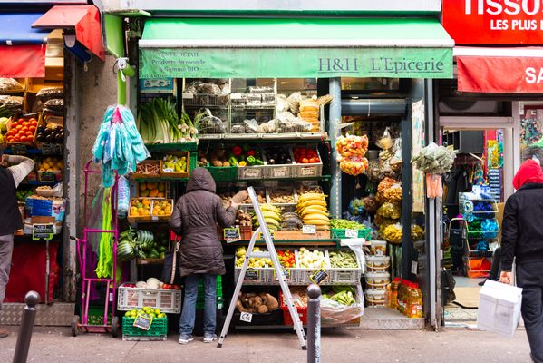
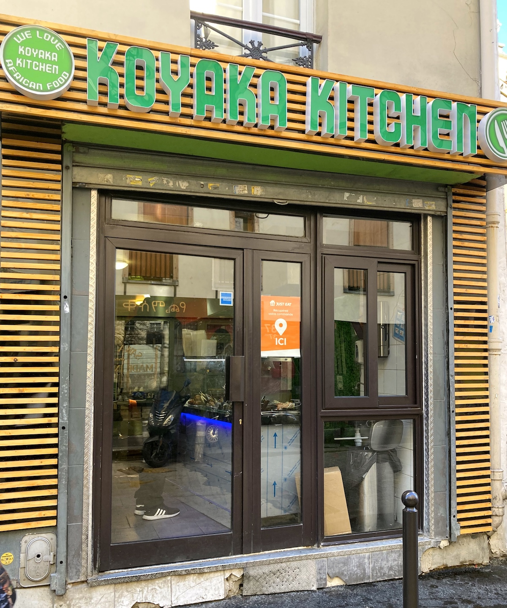
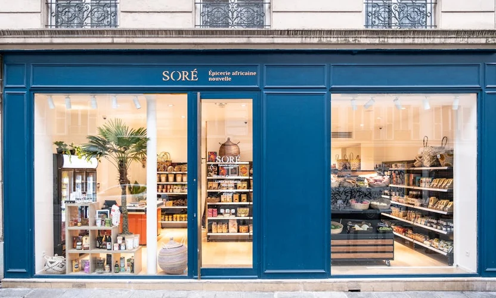

Marché
Marché Dejean
Rue Dejean · Paris 18e (Château Rouge)
Poissons, plantains, manioc, épices et feuilles fraîches.
Le Marché
Gombo, fonio, egusi… Découvrez les produits de la cuisine africaine, où les trouver en Île-de-France et les prochains rendez-vous gourmands.
Lexique
| Ingrédient | Description | On le trouve dans |
|---|---|---|
| Feuilles de ndolè | Feuilles amères de vernonia, lavées plusieurs fois avant cuisson. | Ndolè |
| Plantain | Grosse banane à cuire : verte, elle est ferme ; noire, elle est sucrée et parfaite frite. | Alloco, kelewele, poulet DG |
| Manioc | Tubercule riche en amidon, consommé bouilli, pilé ou fermenté. | Miondo, attiéké, fufu |
| Attiéké | Semoule de manioc fermentée, légère et acidulée, typique de Côte d'Ivoire. | Garba, attiéké poisson braisé |
| Taro | Tubercule à la chair ferme, pilé pour former une pâte élastique. | Taro sauce jaune |
| Huile de palme | Huile rouge-orangé au goût puissant, base de nombreuses sauces. | Sauce jaune, eru, sauce graine |
| Gombo | Légume vert qui donne une texture onctueuse et filante aux sauces. | Sauce gombo, soupes |
| Fonio | Petite céréale ancienne d'Afrique de l'Ouest, sans gluten, qui cuit très vite. | Accompagnements, desserts |
| Fleurs d'hibiscus | Calices séchés au goût acidulé, utilisés pour les boissons. | Bissap |
| Pâte d'arachide | Cacahuètes grillées et moulues, pour des sauces riches et onctueuses. | Mafé, ndolè |
| Egusi | Graines de courge décortiquées et moulues, qui épaississent les sauces. | Soupe egusi |
| Eru (okok) | Feuilles sauvages coupées en fines lanières, très appréciées dans l'ouest du Cameroun. | Eru |
Aucun ingrédient ne correspond à votre recherche.
Où acheter

Marché
Rue Dejean · Paris 18e (Château Rouge)
Poissons, plantains, manioc, épices et feuilles fraîches.

Épicerie
47 rue Myrha · Paris 18e
À compléter après vérification.

Épicerie
Adresse à compléter · Paris 10e (Canal Saint-Martin)
À compléter après vérification.
Agenda
MAS, Paris 13e · Mode, artisanat, ateliers et parcours gourmand autour des cuisines africaines, entrée gratuite.
Espace MAS, Paris 13e · Mode, décoration, cosmétiques et épicerie fine africaine, idéal pour les cadeaux de Noël.
Espace MAS, Paris 13e · Du 6 au 8 mai, grand marché africain avec artisanat et village gastronomique.